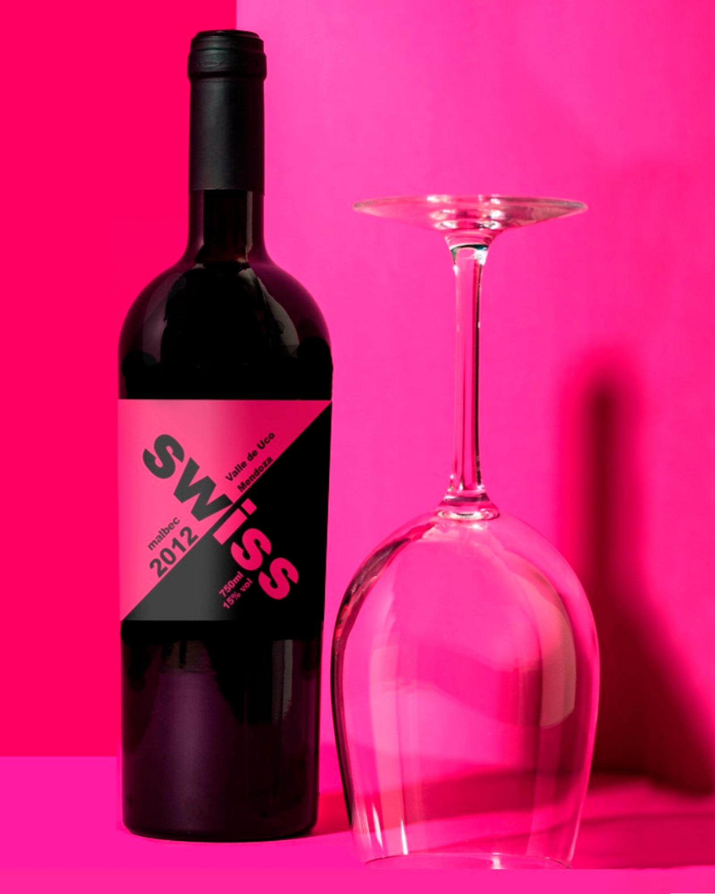
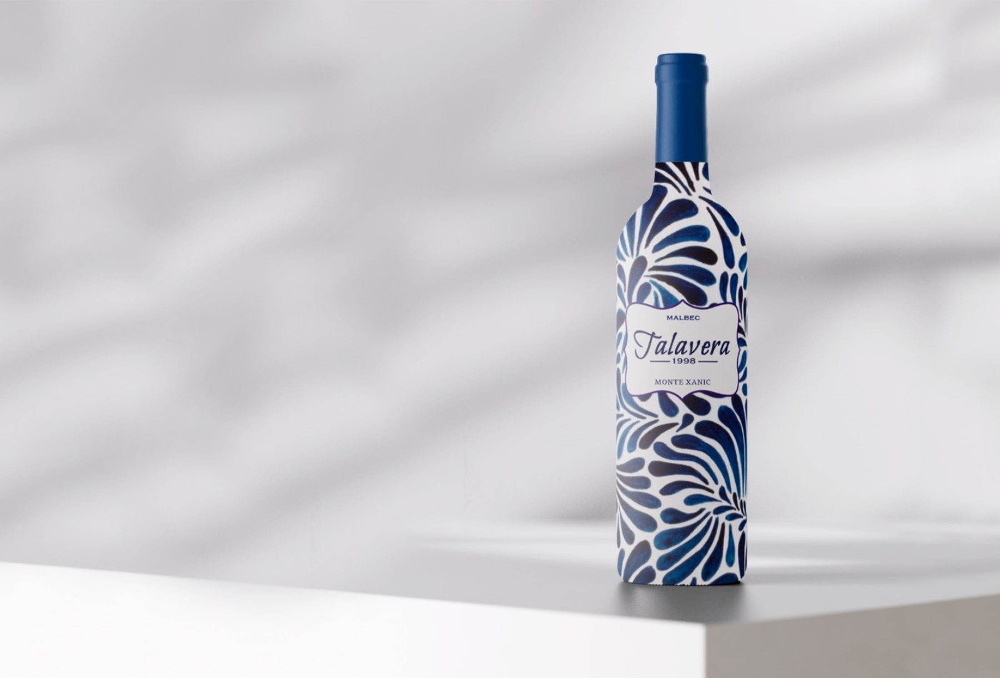
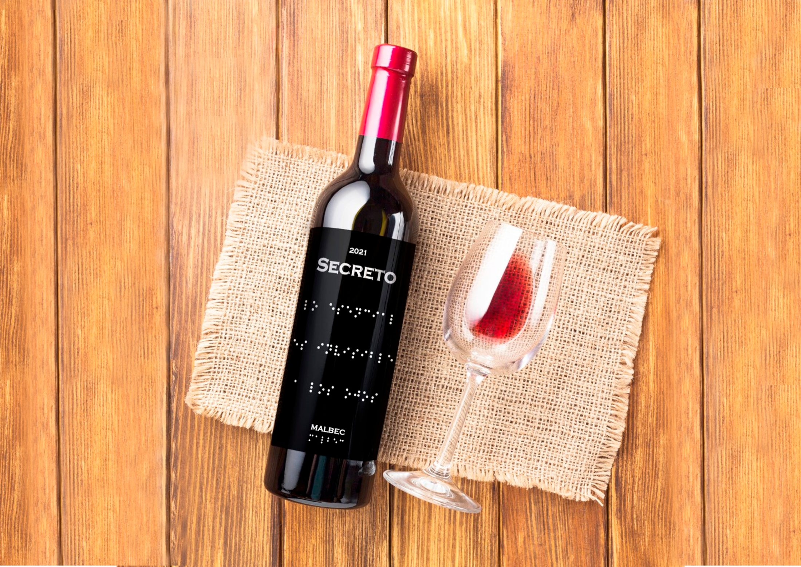

WINE LABELS
Packaging / Diseño Material

Etiquetas de vino pensadas como objetos de arte manual: diseños que buscan impacto y que dependen de la textura del material para contar su historia.
La tinta y el papel
El enfoque se centró en la convivencia entre el soporte y la tinta. La estructura del diseño —tipografía limpia, jerarquía de información— se mantiene, pero la ruptura manual llega con la selección de papeles texturizados y el uso de serigrafía para un acabado táctil único.

La etiqueta no es solo información: es un objeto para tocar.
Experiencia táctil
El packaging es el punto de encuentro entre la estructura legal y tipográfica y el gesto manual del consumidor. Cada etiqueta fue diseñada pensando en la experiencia táctil, obligando a interactuar con el diseño.
La composición asimétrica de "Secreto" lleva la mancha de color al manifiesto: el orden se rompe justo lo necesario para sorprender.
